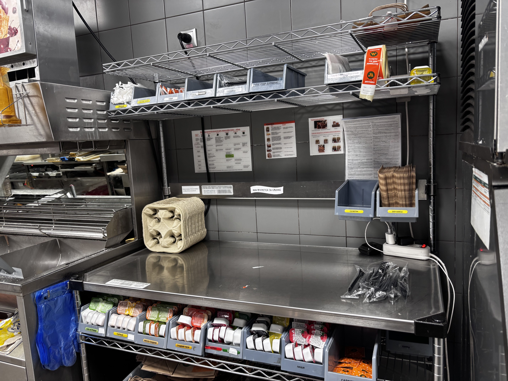
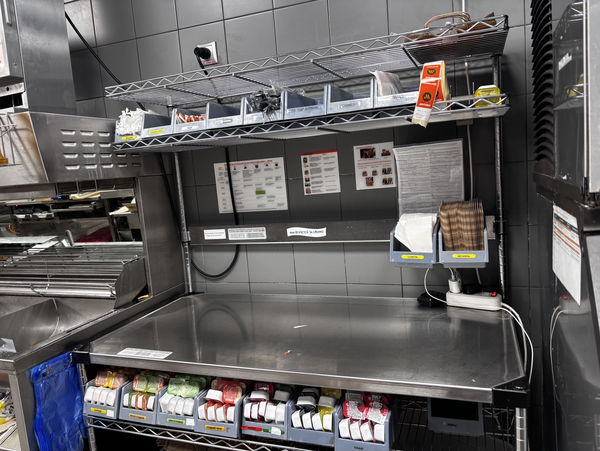

Вы видите 2 фотографии с места, где была совершена непростительная дерзость.
Глупый юнец забыл в доставку несколько сандвичей и не удосужился перепроверить заказ перед заклеиванием.
Этого парня вы, увы, больше никогда не увидите… Его с собой забрал Призрак неполного заказа.
Но он оставил 5 улик после себя. Найдите все и расскажите о них Ведущему.

📷 Фотография #1

📷 Фотография #2
Найдите 5 отличий и подойдите к Ведущему!